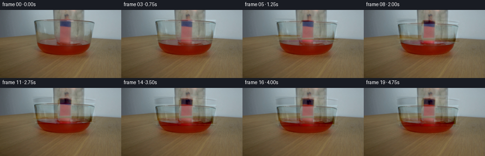
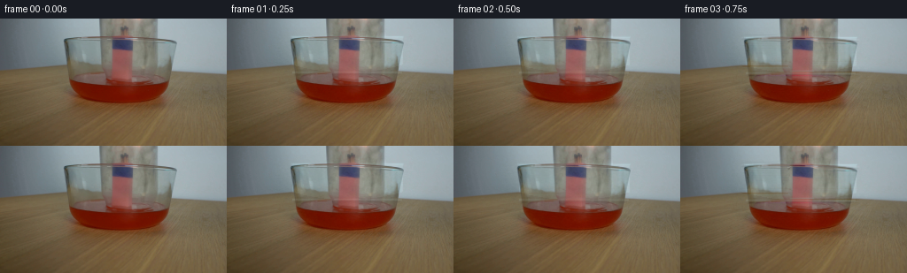

CODING AGENTS AS PIXEL WORLD MODELS
traex/DeepSeek-V4.1-Flash · 0165
点击播放 · 原生 RGB 像素
逐轮保存的候选
回放视频、检查图与代码变化。
每份候选均可单独播放。实际图片检查记录在下方工具轨迹中。
候选 01播放与检查图
点击播放 · 原生 RGB 像素

展开代码变化
--- 上一保存版本
+++ 本次保存版本
@@ -0,0 +1,308 @@
+"""Generate the requested five-second scientific-demonstration shot."""
+
+from pathlib import Path
+
+import cv2
+import numpy as np
+from PIL import Image
+from scipy.ndimage import (
+ binary_closing,
+ gaussian_filter,
+ map_coordinates,
+ shift,
+)
+
+import artifact_io
+
+
+CASE_DIR = Path(__file__).resolve().parent
+WIDTH = 256
+HEIGHT = 144
+FRAMES = 20
+FPS = 4
+
+
+def _smoothstep(value):
+ value = np.clip(value, 0.0, 1.0)
+ return value * value * (3.0 - 2.0 * value)
+
+
+def _row_fill(image, mask, anchors=(56, 70, 201, 216)):
+ """Fill a horizontal region from nearby left/right background anchors."""
+ base = image.astype(np.float32).copy()
+ filled = base.copy()
+ left0, left1, right0, right1 = anchors
+
+ for y in range(HEIGHT):
+ left = np.median(base[y, left0:left1], axis=0)
+ right = np.median(base[y, right0:right1], axis=0)
+ span = np.arange(WIDTH, dtype=np.float32)
+ weight = np.clip((span - (left1 - 1)) / float(right0 - left1 + 2), 0.0, 1.0)
+ weight = weight * weight * (3.0 - 2.0 * weight)
+ line = left[None, :] * (1.0 - weight[:, None]) + right[None, :] * weight[:, None]
+ filled[y] = line
+
+ # Reuse the fine grain just outside the jar so the reconstruction does not
+ # look like a flat studio backdrop.
+ texture = np.zeros_like(filled)
+ texture[:, :] = base
+ texture = gaussian_filter(texture, sigma=(0.0, 5.0, 0.0)) - gaussian_filter(
+ texture, sigma=(0.0, 12.0, 0.0)
+ )
+ filled += texture * 0.72
+
+ alpha = mask.astype(np.float32)[:, :, None]
+ return base * (1.0 - alpha) + filled * alpha
+
+
+def _remove_static_jar(image):
+ """Estimate the unoccluded set beneath the starting jar position."""
+ h, w = image.shape[:2]
+ yy, xx = np.mgrid[:h, :w]
+
+ body = (
+ (xx >= 70)
+ & (xx <= 200)
+ & (yy >= 18)
+ & (yy <= 63)
+ & (
+ (yy <= 22 + 2.0 * np.sin(np.pi * (xx - 70) / 130.0))
+ | (xx <= 121)
+ | (xx >= 151)
+ | (yy >= 56)
+ )
+ )
+ neck = (xx >= 110) & (xx <= 180) & (yy < 22)
+ rim = (yy >= 18) & (yy <= 24) & (xx >= 69) & (xx <= 201)
+ foot = (yy >= 55) & (yy <= 63) & (xx >= 69) & (xx <= 201)
+ mask = (body | neck | rim | foot) & ~((xx >= 124) & (xx <= 150) & (yy >= 23) & (yy <= 55))
+
+ # A slightly expanded soft mask removes the glass halo before rebuilding it.
+ soft = binary_closing(mask, iterations=1)
+ soft = gaussian_filter(soft.astype(np.float32), sigma=0.55)
+ base = _row_fill(image, soft)
+
+ # Keep the lit bundle crisp; only the glass around it is reconstructed.
+ keep = ((xx >= 124) & (xx <= 150) & (yy >= 22) & (yy <= 58)).astype(np.float32)
+ keep = gaussian_filter(keep, sigma=0.7)[:, :, None]
+ base = base * (1.0 - keep) + image.astype(np.float32) * keep
+ return np.clip(base, 0.0, 255.0)
+
+
+def _jar_silhouette(xx, yy, dy):
+ body_top = 20.0 + dy
+ body_bottom = 60.5 + dy
+ left = 73.5
+ right = 198.0
+ center = 135.75
+
+ body = (
+ (xx >= left)
+ & (xx <= right)
+ & (yy >= body_top)
+ & (yy <= body_bottom)
+ )
+ # A very shallow curved base gives the vessel a believable rounded mouth.
+ body &= yy <= body_bottom - 0.0022 * (xx - center) ** 2
+
+ neck_top = -30.0 + dy
+ neck_bottom = body_top + 1.0
+ neck = (
+ (xx >= 111.5)
+ & (xx <= 179.0)
+ & (yy >= neck_top)
+ & (yy <= neck_bottom)
+ )
+ neck |= (
+ (xx >= 111.5)
+ & (xx <= 179.0)
+ & (yy >= body_top - 2.0)
+ & (yy <= body_top + 2.5)
+ )
+ return body | neck
+
+
+def _warp_residual(residual, dy):
+ if abs(dy) < 1e-5:
+ return residual
+ h, w = residual.shape[:2]
+ yy, xx = np.mgrid[:h, :w].astype(np.float32)
+ coords = np.stack((yy - dy, xx), axis=0)
+ warped = np.empty_like(residual)
+ for channel in range(3):
+ warped[:, :, channel] = map_coordinates(
+ residual[:, :, channel],
+ coords,
+ order=1,
+ mode="constant",
+ cval=0.0,
+ prefilter=False,
+ )
+ return warped
+
+
+def _glass_optics(base, dy, frame_index):
+ """Composite the moving vessel and its small optical highlights."""
+ h, w = base.shape[:2]
+ yy, xx = np.mgrid[:h, :w].astype(np.float32)
+ silhouette = _jar_silhouette(xx, yy, dy)
+ body_top = 20.0 + dy
+ body_bottom = 60.5 + dy
+
+ residual = _residual
+ moving = _warp_residual(residual, dy)
+ frame = base + moving
+
+ # Broad cool-glass tint, strongest near the vessel walls.
+ inside = silhouette.astype(np.float32)
+ inside = gaussian_filter(inside, sigma=0.45)
+ wall = np.exp(-((xx - 77.0) / 10.0) ** 2) + np.exp(-((xx - 194.0) / 9.0) ** 2)
+ wall += 0.35 * np.exp(-((xx - 112.0) / 7.0) ** 2)
+ wall += 0.35 * np.exp(-((xx - 178.0) / 7.0) ** 2)
+ wall *= inside
+ tint = np.array([0.95, 1.10, 1.13], dtype=np.float32)
+ frame += inside[:, :, None] * 7.0 * tint
+ frame += wall[:, :, None] * np.array([1.2, 3.0, 3.4], dtype=np.float32)
+
+ # Vertical specular bands travel with the vessel.
+ band_left = np.exp(-((xx - 84.0) / 2.0) ** 2)
+ band_right = np.exp(-((xx - 187.5) / 1.8) ** 2)
+ y_body = (yy >= body_top + 2.0) & (yy <= body_bottom - 3.0)
+ spec = (band_left * 0.75 + band_right * 0.55) * y_body
+ frame += spec[:, :, None] * np.array([5.5, 9.0, 10.0], dtype=np.float32)
+
+ # Rims: a cool upper lip and a brighter mouth at the lower edge.
+ top_line = np.exp(-((yy - (20.2 + dy)) / 1.25) ** 2)
+ top_line *= (xx >= 72.0) & (xx <= 199.0)
+ frame += top_line[:, :, None] * np.array([5.0, 10.0, 11.0], dtype=np.float32)
+
+ mouth = np.exp(-((yy - body_bottom) / 1.15) ** 2)
+ mouth *= (xx >= 74.0) & (xx <= 197.0)
+ frame += mouth[:, :, None] * np.array([9.0, 14.0, 15.0], dtype=np.float32)
+
+ shadow = np.exp(-((yy - (body_bottom + 2.4)) / 1.8) ** 2)
+ shadow *= (xx >= 76.0) & (xx <= 195.0)
+ frame -= shadow[:, :, None] * np.array([5.0, 5.0, 4.0], dtype=np.float32)
+
+ # Fine vertical streaks in the glass, shifted with the jar.
+ phase = (yy - dy) * 0.17 + np.sin(xx * 0.13) * 0.8 + frame_index * 0.07
+ streak = (np.sin(phase) * 0.5 + 0.5) ** 5
+ streak *= inside * ((xx < 119.0) | (xx > 153.0)) * 0.9
+ frame += streak[:, :, None] * np.array([2.0, 3.5, 4.0], dtype=np.float32)
+
+ return np.clip(frame, 0.0, 255.0)
+
+
+def _add_liquid_motion(frame, frame_index, dy):
+ """Add restrained ripples and a faint red bounce around the bowl."""
+ h, w = frame.shape[:2]
+ yy, xx = np.mgrid[:h, :w].astype(np.float32)
+ phase = frame_index * 0.9
+
+ ellipse = ((xx - 136.0) / 58.0) ** 2 + ((yy - 90.0) / 22.0) ** 2
+ liquid = np.clip((1.05 - ellipse) / 0.28, 0.0, 1.0)
+ surface = np.clip(1.0 - np.abs(yy - 76.0) / 4.0, 0.0, 1.0) * liquid
+ wave = np.sin(xx * 0.21 + phase) * np.cos(yy * 0.29 - phase * 0.45)
+ wave += 0.45 * np.sin(xx * 0.09 - phase * 1.4)
+ ripple = surface * wave * 2.2
+ frame[:, :, 0] += ripple
+ frame[:, :, 1] -= ripple * 0.20
+ frame[:, :, 2] -= ripple * 0.12
+
+ # Warm light from the flame reflects into the red surface.
+ glow = liquid * np.clip((yy - 70.0) / 30.0, 0.0, 1.0)
+ glow *= 0.45 + 0.12 * np.sin(phase * 1.8)
+ frame[:, :, 0] += glow * 2.0
+ frame[:, :, 1] += glow * 0.4
+
+ # The descending jar presses a soft, moving caustic onto the liquid.
+ mouth_y = 62.0 + dy
+ caustic = np.exp(-((yy - (mouth_y + 11.0)) / 4.5) ** 2)
+ caustic *= np.exp(-((xx - 136.0) / 43.0) ** 2)
+ caustic *= liquid
+ frame[:, :, 0] += caustic * 2.6
+ frame[:, :, 1] += caustic * 0.8
+ return frame
+
+
+def _add_flame_motion(frame, frame_index):
+ """Move the small highlights over the lit bundle without changing the setup."""
+ h, w = frame.shape[:2]
+ yy, xx = np.mgrid[:h, :w].astype(np.float32)
+ phase = frame_index * 1.15
+
+ flame = np.exp(-((xx - 137.0) / 8.5) ** 2)
+ flame *= np.exp(-((yy - 29.0) / 9.5) ** 2)
+ flicker = 0.5 + 0.5 * np.sin(phase) + 0.22 * np.sin(phase * 2.7 + 0.8)
+ flicker = np.clip(flicker, 0.0, 1.2)
+
+ # Tiny warm pulses sit on the existing bundle rather than redrawing it.
+ frame[:, :, 0] += flame * (2.2 + 1.4 * flicker)
+ frame[:, :, 1] += flame * (0.6 + 0.35 * flicker)
+ frame[:, :, 2] += flame * 0.15
+
+ ember = np.exp(-((xx - (137.0 + np.sin(phase * 0.8) * 1.1)) / 3.2) ** 2)
+ ember *= np.exp(-((yy - 36.0) / 3.0) ** 2)
+ frame[:, :, 0] += ember * 4.0
+ return frame
+
+
+def _add_film_texture(frame, frame_index):
+ """Keep the generated frames in the same quiet photographic register."""
+ h, w = frame.shape[:2]
+ rng = np.random.default_rng(1917 + frame_index * 31)
+ noise = rng.normal(0.0, 1.0, size=(h, w, 1)).astype(np.float32)
+ noise = gaussian_filter(noise, sigma=(0.55, 0.7, 0.0))
+ frame += noise * 1.15
+
+ # Slightly darker corners, matching the supplied still.
+ yy, xx = np.mgrid[:h, :w].astype(np.float32)
+ vignette = ((xx - 128.0) / 175.0) ** 2 + ((yy - 72.0) / 130.0) ** 2
+ frame -= np.clip(vignette - 0.55, 0.0, 1.0)[:, :, None] * 2.2
+ return frame
+
+
+_SOURCE = np.asarray(Image.open(CASE_DIR / "first_frame.png").convert("RGB"), dtype=np.float32)
+_BASE = _remove_static_jar(_SOURCE)
+_residual = _SOURCE - _BASE
+
+
+def generate_frames():
+ frames = []
+ for index in range(FRAMES):
+ if index == 0:
+ frames.append(_SOURCE.astype(np.uint8).copy())
+ continue
+
+ # The vessel starts to descend after a short beat, then settles gently.
+ progress = _smoothstep((index - 1.0) / 15.5)
+ dy = 17.0 * progress
+ frame = _glass_optics(_BASE, dy, index)
+ frame = _add_liquid_motion(frame, index, dy)
+ frame = _add_flame_motion(frame, index)
+ frame = _add_film_texture(frame, index)
+
+ # Preserve the photographic detail of the source outside the active rig.
+ active = np.zeros((HEIGHT, WIDTH, 1), dtype=np.float32)
+ active[18:116, 54:216] = 1.0
+ active = gaussian_filter(active, sigma=(2.0, 2.0, 0.0))
+ source = _SOURCE
+ frame = source * (1.0 - active) + frame * active
+ frames.append(np.clip(np.rint(frame), 0, 255).astype(np.uint8))
+ return np.stack(frames, axis=0)
+
+
+def main():
+ frames = generate_frames()
+ artifact_io.save(frames, CASE_DIR)
+
+ try:
+ import imageio.v2 as imageio
+
+ imageio.mimsave(CASE_DIR / "video.mp4", frames, fps=FPS, quality=8)
+ except Exception:
+ pass
+
+
+if __name__ == "__main__":
+ main()
候选 02播放与检查图
点击播放 · 原生 RGB 像素


展开代码变化
--- 上一保存版本
+++ 本次保存版本
@@ -288,6 +288,13 @@
active = gaussian_filter(active, sigma=(2.0, 2.0, 0.0))
source = _SOURCE
frame = source * (1.0 - active) + frame * active
+
+ # At rest, the reconstructed layers should converge on the exact source.
+ # Let the replacement become fully authoritative only after the vessel
+ # has visibly started moving.
+ reveal = _smoothstep(dy / 5.0)
+ reveal = 0.08 + 0.92 * reveal
+ frame = source * (1.0 - reveal) + frame * reveal
frames.append(np.clip(np.rint(frame), 0, 255).astype(np.uint8))
return np.stack(frames, axis=0)
候选 03播放与检查图
可观测工具轨迹
实际执行的命令与返回图片。
命令 1exit 0
/bin/bash -c "pwd && rg --files -g '"'!*__pycache__*'"' -g '"'!*.pyc'"' | sed -n '1,200p'"
命令 2exit 0
/bin/bash -c "printf '%s\\n' '--- prompt.txt ---'; sed -n '1,240p' prompt.txt; printf '%s\\n' '--- GENERATION_RULES.md ---'; sed -n '1,280p' GENERATION_RULES.md"
命令 3exit 0
/bin/bash -c "find . -maxdepth 2 -type f -printf '%p\\t%s bytes\\n' | sort | sed -n '1,200p'"
命令 4exit 0
/bin/bash -c "sed -n '1,260p' artifact_io.py"
命令 5exit 0
/bin/bash -c "sed -n '1,260p' player_template.html"
命令 6exit 0
/bin/bash -c "python - <<'PY'
from PIL import Image
import numpy as np
im=Image.open('first_frame.png')
a=np.array(im)
print('mode',im.mode,'size',im.size,'shape',a.shape,'dtype',a.dtype)
print('global min/max/mean/std',a.min(axis=(0,1)),a.max(axis=(0,1)),a.mean(axis=(0,1)),a.std(axis=(0,1)))
# coarse 16x9 block means
h,w=a.shape[:2]
bh,bw=h//9,w//16
blocks=[]
for y in range(9):
row=[]
for x in range(16):
p=a[y*bh:(y+1)*bh,x*bw:(x+1)*bw].reshape(-1,3).mean(0).astype(int)
row.append('#%02x%02x%02x'%tuple(p))
blocks.append(row)
print('16x9 block means:')
for i,row in enumerate(blocks): print(f'{i:02d}', ' '.join(row))
# most frequent colors
q=(a//8)*8
colors,cnt=np.unique(q.reshape(-1,3),axis=0,return_counts=True)
idx=np.argsort(cnt)[-30:][::-1]
print('top quantized colors:')
for c,n in zip(colors[idx],cnt[idx]): print(tuple(map(int,c)),int(n),round(float(n)/(h*w)*100,2))
PY"命令 7exit 127
/bin/bash -c "file first_frame.png && identify -verbose first_frame.png | sed -n '1,80p'"
命令 8exit 0
/bin/bash -c "python - <<'PY' mods=['numpy','PIL','scipy','cv2','skimage','imageio','matplotlib'] for m in mods: try: x=__import__(m); print(m,'ok',getattr(x,'__version__','')) except Exception as e: print(m,'ERR',type(e).__name__,e) PY"
命令 9exit 0
/bin/bash -c "python - <<'PY'
from PIL import Image
import numpy as np
A=np.array(Image.open('first_frame.png'))
# ASCII edges/luma map 64x36
G=A.mean(2)
# normalize/quant chars
chars=' .,:;irsXA253hMHGS#9B&@'
for y in range(0,144,4):
s=''
for x in range(0,256,4):
v=G[y:y+4,x:x+4].mean(); s+=chars[min(len(chars)-1,int(v/256*len(chars)))]
print(f'{y:03d} '+s)
PY"命令 10exit 0
/bin/bash -c "python - <<'PY'
from PIL import Image
import numpy as np
A=np.array(Image.open('first_frame.png')).astype(float)
# inspect color maps for red liquid and glass / jar
R,G,B=A.transpose(2,0,1)
print('Red mask stats')
for t in [20,30,40,50,60,70,80,90,100,110,120,130]:
m=(R>G+20)&(R>B+20)&(R>t)
ys,xs=np.where(m)
print(t,m.sum(), (xs.min(),xs.max(),ys.min(),ys.max()) if len(xs) else None)
print('RGB samples grid every 16 x 12')
for y in range(6,144,12):
print(y, ['%02x%02x%02x'%tuple(A[y,x].astype(int)) for x in range(8,256,16)])
PY"命令 11exit 0
/bin/bash -c "python - <<'PY'
from PIL import Image
import numpy as np
from scipy.ndimage import gaussian_filter, sobel
A=np.array(Image.open('first_frame.png')).astype(float)
G=A.mean(2)
for sig,thr in [(0.7,18),(1.2,10),(2,6)]:
S=gaussian_filter(G,sig)
E=np.hypot(sobel(S,0),sobel(S,1))
print('\\nEDGES sig',sig,'thr',thr)
# 2x2 average, 128x72 too wide -> 2x4 blocks gives 64x36
for y in range(0,144,4):
s=''
for x in range(0,256,4):
v=E[y:y+4,x:x+4].mean()
if v>thr*2: c='#'
elif v>thr: c='+'
elif v>thr*.55: c='.'
else:c=' '
s+=c
print(f'{y:03d} '+s)
PY"命令 12exit 0
/bin/bash -c "python - <<'PY'
from PIL import Image
import numpy as np
A=np.array(Image.open('first_frame.png')).astype(float)
# print RGB and HSV-ish per 8x8 / central region as hue symbols; edge image 128x72 is manageable
# classify by color:
R,G,B=A.transpose(2,0,1)
red=(R>G*1.35)&(R>B*1.25)&(R>70)
wood=(R>G*1.05)&(G>B*1.08)&(R>65)&~red
glass=(B>=G-5)&(B>R*1.05)&(R>70)
dark=A.mean(2)<65
light=A.mean(2)>155
print('legend red=R wood=w glass=b dark=# light=@ other=.')
for y in range(0,144,2):
s=''
for x in range(0,256,2):
blk=A[y:y+2,x:x+2]
rr=red[y:y+2,x:x+2].mean(); ww=wood[y:y+2,x:x+2].mean(); bb=glass[y:y+2,x:x+2].mean(); dd=dark[y:y+2,x:x+2].mean(); ll=light[y:y+2,x:x+2].mean()
if rr>.5:c='R'
elif ww>.65:c='w'
elif bb>.75:c='b'
elif dd>.6:c='#'
elif ll>.6:c='@'
else:c='.'
s+=c
print(f'{y:03d} '+s)
PY"命令 13exit 0
/bin/bash -c "python - <<'PY'
from PIL import Image
import numpy as np
from scipy.ndimage import gaussian_filter
A=np.array(Image.open('first_frame.png')).astype(float)
# color sat / difference map 2x2 blocks with threshold to show jar boundaries
for y in range(18,116,2):
s=''
for x in range(70,240,2):
p=A[y:y+2,x:x+2].mean((0,1))
r,g,b=p
mx=max(p); mn=min(p); sat=(mx-mn)/(mx+1e-6)
if (r>g*1.25 and r>b*1.15 and r>70): c='R'
elif b>r*1.05 and b>90: c='B'
elif mx<58:c='#'
elif mx>145:c='@'
elif sat<.08:c='.'
elif r>g> b:c='w'
else:c=' '
s+=c
print(f'{y:03d} '+s)
PY"命令 14exit 0
/bin/bash -c "python - <<'PY'
from PIL import Image
import numpy as np
A=np.array(Image.open('first_frame.png')).astype(int)
# column profiles at select x
for x in [75,80,90,100,110,120,130,140,150,160,170,180,190,200,210,220,230,240,245]:
p=A[:,x]
print('\\nx',x)
for y in range(16,116,4): print(y,tuple(p[y]),end='; ')
print()
PY"命令 15exit 0
/bin/bash -c "python - <<'PY'
from PIL import Image
import numpy as np
from scipy.ndimage import gaussian_filter
A=np.array(Image.open('first_frame.png')).astype(float)
# edge diff directly, print central crop with 1px per char maybe two halves
G=A.mean(2)
Dx=np.abs(np.diff(gaussian_filter(G,0.7),axis=1)); Dy=np.abs(np.diff(gaussian_filter(G,0.7),axis=0)); E=np.zeros_like(G); E[:,:-1]+=Dx;E[:-1,:]+=Dy
# each 2x2 max; crop x=60..250 y=16..116
for y in range(16,116,2):
s=''
for x in range(60,250,2):
v=E[y:y+2,x:x+2].max()
c='@' if v>55 else '#' if v>32 else '+' if v>20 else '.' if v>11 else ' '
s+=c
print(f'{y:03d} '+s)
PY"命令 16exit 0
/bin/bash -c "python - <<'PY'
from PIL import Image
import numpy as np
A=np.array(Image.open('first_frame.png')).astype(float)
# print numeric matrices central x 90..230, y 18..105, classify exact base color deviations
# First local smoothed background estimate via median filter? just sample values
for y in range(18,60,3):
print('y',y, ['%3d,%3d,%3d'%tuple(A[y,x].astype(int)) for x in range(80,221,10)])
print('--- lower')
for y in range(60,106,3):
print('y',y, ['%3d,%3d,%3d'%tuple(A[y,x].astype(int)) for x in range(80,221,10)])
PY"命令 17exit 0
/bin/bash -c "python - <<'PY'
import cv2, numpy as np
from PIL import Image
A=cv2.imread('first_frame.png')
G=cv2.cvtColor(A,cv2.COLOR_BGR2GRAY)
for p2 in [12,20,30,40,50]:
e=cv2.Canny(G,30,80)
ls=cv2.HoughLinesP(e,1,np.pi/180,threshold=20,minLineLength=20,maxLineGap=4)
print('\\nHough p2',p2)
if ls is not None:
arr=[]
for l in ls[:,0]:
x1,y1,x2,y2=map(int,l); length=((x2-x1)**2+(y2-y1)**2)**.5
arr.append((round(length,1),x1,y1,x2,y2))
for t in sorted(arr,reverse=True)[:30]:print(t)
break
# contours from edges
e=cv2.Canny(G,20,70)
n,lab,stats,cents=cv2.connectedComponentsWithStats(e,8)
print('\\nedge components >20')
for i in np.argsort(stats[:,4])[::-1][1:20]: print(i,stats[i].tolist(),cents[i].round(1).tolist())
PY"命令 18exit 0
/bin/bash -c "python - <<'PY'
from PIL import Image
import numpy as np
A=np.array(Image.open('first_frame.png')).astype(float)
# Need identify exact static background and foreground. Let's inspect 128x72 color reduced mosaic by nearest of 12 colors, one char per 2x2 maybe crop.
# Show hue and luminance classes in central 100:240 x 15:105 every 1x2? Let's output x-axis every 2 y every 2
G=A.mean(2)
for y in range(14,112,2):
s=''
for x in range(60,250,2):
p=A[y:y+2,x:x+2].mean((0,1)); r,g,b=p; mx=p.max(); mn=p.min()
if r>1.25*g and r>1.2*b and r>65:c='R'
elif b>1.08*r and b>1.04*g and b>80:c='b'
elif r>1.1*g and g>1.05*b and r>80:c='w'
elif mx<65:c='#'
elif mx>150:c='@'
elif mx-mn<8:c='.'
else:c='-'
s+=c
print(f'{y:03d} '+s)
PY"命令 19exit 0
/bin/bash -c "python - <<'PY'
from PIL import Image
import numpy as np
A=np.array(Image.open('first_frame.png')).astype(float)
# Find likely jar shape via line/edge: examine mask of pixels differing strongly from row-wise smooth bg? Save enhanced contrast crops? can't view, but can numerically inspect gradients.
# detect straight vertical lines using col diff profile in upper area
G=A.mean(2)
for region in [(0,60),(20,70),(30,110)]:
y0,y1=region
dx=np.abs(np.diff(G[y0:y1],axis=1)).mean(0)
idx=np.argsort(dx)[-30:][::-1]
print('region',region,'top x diff',[(int(x),round(float(dx[x]),2)) for x in idx[:20]])
# horizontal line profile per y for central area
for y in [19,20,21,22,23,24,25,26,27,28,52,53,54,55,56,57,58,59,60,61,62,63,64,65,66,67,68,69,70,71,72,73,74,75,76,77,78,79,80,81,82,83,84,85,86,87,88,89,90,91,92,93,94,95,96,97,98,99,100,101,102,103,104,105]:
# find strong horizontal segments x 60..240
d=np.abs(np.diff(G[y,60:240]))
inds=np.where(d>20)[0]+60
# group
if len(inds):
runs=[]; st=pr=inds[0]
for q in inds[1:]:
if q>pr+2:runs.append((st,pr));st=q
pr=q
runs.append((st,pr))
if any(b-a>10 for a,b in runs): print(y,runs)
PY"命令 20exit 0
/bin/bash -c "python - <<'PY'
import cv2,numpy as np
A=cv2.imread('first_frame.png')
G=cv2.cvtColor(A,cv2.COLOR_BGR2GRAY)
for lo,hi in [(20,50),(30,80),(50,120)]:
e=cv2.Canny(G,lo,hi)
print('\\nCanny',lo,hi)
# print edges crop x 60..240 y 15..110 every 2 x2
for y in range(14,112,2):
s=''
for x in range(60,250,2):
v=e[y:y+2,x:x+2].max()
s += '#' if v else ' '
print(f'{y:03d} '+s)
PY"命令 21exit 0
/bin/bash -c "python - <<'PY'
from PIL import Image
import numpy as np
A=np.array(Image.open('first_frame.png')).astype(float)
G=A.mean(2)
# fit linear/quadratic background for top row region excluding center object, then display residual at upper area
# perhaps glass jar is centered x=112..193? Check edges verticals at x=112,126,149,177,193. Need compare pixels left/right.
# Detect unique rectangle outlines via line transform with lower threshold.
import cv2
E=cv2.Canny(cv2.cvtColor(A.astype(np.uint8),cv2.COLOR_RGB2GRAY),20,60)
for th in [15,20,25,30]:
lines=cv2.HoughLinesP(E,1,np.pi/180,threshold=th,minLineLength=18,maxLineGap=3)
print('th',th)
if lines is None:continue
arr=[]
for l in lines[:,0]:
x1,y1,x2,y2=map(int,l); dx=x2-x1;dy=y2-y1; L=(dx*dx+dy*dy)**.5
if abs(dx)<4 or abs(dy)<4:arr.append((round(L,1),x1,y1,x2,y2))
for t in sorted(arr,reverse=True)[:50]: print(t)
PY"命令 22exit 0
/bin/bash -c "python - <<'PY'
import cv2,numpy as np
A=cv2.imread('first_frame.png')
G=cv2.cvtColor(A,cv2.COLOR_BGR2GRAY)
for dp in [1,1.2,1.5]:
for p2 in [10,15,20,25,30]:
cs=cv2.HoughCircles(cv2.GaussianBlur(G,(3,3),0),cv2.HOUGH_GRADIENT,dp=dp,minDist=10,param1=60,param2=p2,minRadius=5,maxRadius=90)
if cs is not None:
print('dp',dp,'p2',p2, np.round(cs[0],1)[:20].tolist())
PY"命令 23exit 0
/bin/bash -c "python - <<'PY'
from PIL import Image
import numpy as np
A=np.array(Image.open('first_frame.png')).astype(float)
# Compute grayscale column/row gradient profiles in upper object bbox x80..200 y15..75
for x in range(70,205,5):
dx=np.abs(A[15:75,min(x+1,255)]-A[15:75,x]).mean() if x<255 else 0
if dx>4: print('x',x,'dx',round(float(dx),2))
print('rows')
for y in range(15,78,3):
dy=np.abs(A[min(y+1,143),70:205]-A[y,70:205]).mean() if y<143 else 0
if dy>4: print('y',y,'dy',round(float(dy),2))
PY"命令 24exit 0
/bin/bash -c "python - <<'PY'
from PIL import Image
import numpy as np
A=np.array(Image.open('first_frame.png')).astype(float)
# local color residual after horizontal smoothing? print y rows as symbols for exact quantized 16-color labels in bbox
# use KMeans on crop x70:200,y20:76 k=12 to see segment shape
import cv2
crop=A[20:76,70:205].reshape(-1,3)
criteria=(cv2.TERM_CRITERIA_EPS+cv2.TERM_CRITERIA_MAX_ITER,50,.1)
K=12
_,labels,cent=cv2.kmeans(crop.astype(np.float32),K,None,criteria,10,cv2.KMEANS_PP_CENTERS)
# sort by luminance
order=np.argsort(cent.mean(1)); remap=np.empty(K,int); remap[order]=np.arange(K)
labs=remap[labels.reshape(56,135)]
chars=' .:-=+*#%@ABCDEFGHIJKLMNOPQRSTUVWXYZ'
print('centers', [tuple(np.round(cent[i]).astype(int)) for i in order])
for yy in range(0,56,2):
s=''
for xx in range(0,135,2):
v=labs[yy:yy+2,xx:xx+2].mean()/(K-1)
s+=chars[min(len(chars)-1,int(v*len(chars)))]
print(f'{20+yy:03d} '+s)
PY"命令 25exit 0
/bin/bash -c "python - <<'PY'
import cv2,numpy as np
A=cv2.imread('first_frame.png')
G=cv2.cvtColor(A,cv2.COLOR_BGR2GRAY)
# find contours of low threshold edges and polygon approximation
E=cv2.Canny(G,15,45)
cs,_=cv2.findContours(E,cv2.RETR_LIST,cv2.CHAIN_APPROX_SIMPLE)
arr=[]
for c in cs:
x,y,w,h=cv2.boundingRect(c); area=cv2.contourArea(c); L=cv2.arcLength(c,False)
if w>10 and h>10:
peri=cv2.arcLength(c,True); ap=cv2.approxPolyDP(c,.02*peri,True)
arr.append((area,x,y,w,h,len(ap),ap.reshape(-1,2).tolist()))
for a in sorted(arr,reverse=True)[:40]: print(a)
PY"命令 26exit 0
/bin/bash -c "python - <<'PY'
from PIL import Image
import numpy as np
A=np.array(Image.open('first_frame.png')).astype(float)
# examine central 126:152 x 24:75. This is likely dark vertical object / match bundle? print RGB grid.
for y in range(20,80,2):
s=''
for x in range(116,168,2):
r,g,b=A[y,x]
if r>g*1.15 and r>b*1.1:c='R'
elif b>r*1.15 and b>g*1.02:c='b'
elif max(r,g,b)<65:c='#'
elif max(r,g,b)>150:c='@'
elif r>g*1.03 and g>b*1.03:c='w'
elif max(r,g,b)-min(r,g,b)<7:c='.'
else:c='-'
s+=c
print(f'{y:03d} '+s)
print('samples central')
for y in range(22,78,2): print(y,['%02x%02x%02x'%tuple(A[y,x].astype(int)) for x in range(116,168,4)])
PY"命令 27exit 0
/bin/bash -c "python - <<'PY'
from PIL import Image
import numpy as np
A=np.array(Image.open('first_frame.png')).astype(float)
G=A.mean(2)
# edge map bbox x 60..200 y 15..80 with 1x1 max, detailed enough to infer jar
from scipy.ndimage import gaussian_filter,sobel
E=np.hypot(sobel(gaussian_filter(G,0.5),0),sobel(gaussian_filter(G,0.5),1))
# reduce y 1, x 1 but output 140 columns 65 rows
for y in range(14,82,1):
s=''
for x in range(60,205,1):
v=E[y,x]
c='@' if v>80 else '#' if v>45 else '+' if v>25 else '.' if v>15 else ' '
s+=c
print(f'{y:03d} '+s)
PY"命令 28exit 0
/bin/bash -c "python - <<'PY'
from PIL import Image
import numpy as np
A=np.array(Image.open('first_frame.png')).astype(float)
# Check if jar starts at top and extends down: identify horizontal line y=20 spans x74..194, verticals x74,113,126,149,177,193.
# compare color stats of patches around likely glass surfaces
boxes={'left_glass':(78,24,110,48),'center_dark':(128,24,148,34),'red_center':(128,36,148,52),'right_glass':(180,28,192,52),'bg_left':(20,28,60,48),'bg_right':(210,30,250,50),'bundle':(126,35,148,52),'liquid':(90,78,170,92)}
for n,(x0,y0,x1,y1) in boxes.items():
p=A[y0:y1,x0:x1]
print(n,'mean',p.mean((0,1)).round(1),'std',p.std((0,1)).round(1),'min',p.min((0,1)).astype(int),'max',p.max((0,1)).astype(int))
PY"命令 29exit 0
/bin/bash -c "python - <<'PY'
from PIL import Image
import numpy as np
A=np.array(Image.open('first_frame.png')).astype(float)
# Glass edge hypothesis: top rim spans x74..194 y19..23. vertical x74 and x193 down to y52..58.
# lower edge? analyze strong pixels along expected contours
from scipy.ndimage import gaussian_filter,sobel
G=A.mean(2); E=np.hypot(sobel(gaussian_filter(G,.5),0),sobel(gaussian_filter(G,.5),1))
for name,(x0,y0,x1,y1) in {'left':(68,20,82,65),'right':(186,20,199,65),'top':(65,15,205,28),'bottomleft':(70,45,130,65),'bottomright':(150,45,205,65)}.items():
p=E[y0:y1,x0:x1]
yy,xx=np.where(p>50)
print(name,'n',len(xx))
if len(xx):
print(' bbox', (x0+xx.min(),y0+yy.min(),x0+xx.max(),y0+yy.max()), 'cent',(x0+xx.mean(),y0+yy.mean()))
# per y max x
for y in range(y0,y1):
q=np.where(E[y,x0:x1]>50)[0]
if len(q): print(' y',y,'x',x0+q.min(),x0+q.max())
PY"命令 30exit 0
/bin/bash -c "python - <<'PY'
from PIL import Image
import numpy as np
A=np.array(Image.open('first_frame.png')).astype(int)
R,G,B=A.transpose(2,0,1)
for name,m in {
'yellow':(R>140)&(G>100)&(B<100),
'orange':(R>130)&(G>60)&(G<130)&(B<60),
'brightred':(R>150)&(G<100)&(B<100),
'blueflame':(B>90)&(B>R*1.25)&(B>G*1.1)&(R<100),
'bright':(A.mean(2)>185),
}.items():
ys,xs=np.where(m)
print(name,m.sum(), (xs.min(),xs.max(),ys.min(),ys.max()) if len(xs) else None)
if len(xs):
# row/col hist bins
print(' yhist',np.histogram(ys,bins=np.arange(0,145,12))[0].tolist())
print(' xhist',np.histogram(xs,bins=np.arange(0,257,16))[0].tolist())
PY"命令 31exit 0
/bin/bash -c "python - <<'PY'
from PIL import Image
import numpy as np
A=np.array(Image.open('first_frame.png')).astype(int)
for y in [0,5,10,15,18,19,20,21,22,24,30,40,50,55,58,60,62]:
print('\\ny',y)
for x in range(60,211,5): print('%3d:%02x%02x%02x'%(x,*A[y,x]),end=' ')
print()
PY"命令 32exit 0
/bin/bash -c "MPLCONFIGDIR=.tmp/mpl python generate.py && python - <<'PY'
from pathlib import Path
from PIL import Image
import numpy as np
src=np.array(Image.open('first_frame.png').convert('RGB'))
a=np.load('pixels.npz')['pixels']
def unpack(v): return np.stack(((v>>16)&255,(v>>8)&255,v&255),axis=-1).astype(np.uint8)
f0=unpack(a[:,:,0])
print('shape',a.shape,'first identical',np.array_equal(src,f0),'maxdiff',np.abs(src.astype(int)-f0.astype(int)).max())
print('files',[(p.name,p.stat().st_size) for p in [Path('pixels.npz'),Path('index.html'),Path('video.mp4'),Path('inspection.png')]])
PY"命令 33exit 1
/bin/bash -c "python - <<'PY'
import cv2, numpy as np
from PIL import Image
A=cv2.imread('video.mp4')
print('video',A.shape)
# frame diffs and stats
P=np.stack([np.array(Image.open(f'frames/{i:02d}.png')) for i in range(20)])
for i in range(20):
d=np.abs(P[i].astype(int)-P[max(0,i-1)].astype(int)) if i else np.zeros(P.shape[1:])
print(i,'mean',P[i].mean().round(2),'std',P[i].std().round(2),'diffprev',d.mean().round(3),'changed>5',int((d.max(2)>5).sum()))
# object estimate bbox pixels where difference to base? report red and blue masks
for i in [0,4,8,12,16,19]:
p=P[i].astype(float); r,g,b=p.transpose(2,0,1)
red=(r>g*1.3)&(r>b*1.2)&(r>70)
blue=(b>r*1.1)&(b>g*1.02)&(b>80)
print('mask',i,'red',int(red.sum()),'blue',int(blue.sum()))
PY"命令 34exit 0
/bin/bash -c "python - <<'PY'
import numpy as np
from PIL import Image
P=np.stack([np.array(Image.open(f'frames/{i:02d}.png')) for i in range(20)])
for i in range(20):
d=np.abs(P[i].astype(int)-P[max(0,i-1)].astype(int)) if i else np.zeros(P.shape[1:])
print(i,'mean',round(float(P[i].mean()),2),'std',round(float(P[i].std()),2),'diffprev',round(float(d.mean()),3),'changed>5',int((d.max(2)>5).sum()))
for i in [0,4,8,12,16,19]:
p=P[i].astype(float); r,g,b=p.transpose(2,0,1)
red=(r>g*1.3)&(r>b*1.2)&(r>70)
blue=(b>r*1.1)&(b>g*1.02)&(b>80)
print('mask',i,'red',int(red.sum()),'blue',int(blue.sum()))
PY"命令 35exit 0
/bin/bash -c "python - <<'PY'
from PIL import Image
import numpy as np
A=np.array(Image.open('first_frame.png')).astype(float)
# render numerical crop at final using output? inspect frame 10 crop chars for central jar silhouette and compare frame 0
for idx in [0,5,10,15,19]:
P=np.array(Image.open(f'frames/{idx:02d}.png')).astype(float)
print('\\nFRAME',idx)
for y in range(15,85,3):
s=''
for x in range(65,205,2):
p=P[y:y+3,x:x+2].mean((0,1)); r,g,b=p; mx=p.max();mn=p.min()
if r>1.25*g and r>1.2*b and r>65:c='R'
elif b>1.08*r and b>1.04*g and b>80:c='b'
elif r>1.1*g and g>1.05*b and r>80:c='w'
elif mx<65:c='#'
elif mx>150:c='@'
elif mx-mn<8:c='.'
else:c='-'
s+=c
print(f'{y:03d} '+s)
PY"命令 36exit 0
/bin/bash -c "python - <<'PY'
import imageio.v2 as imageio
try:
r=imageio.get_reader('video.mp4')
print('reader',r.get_meta_data())
a=r.get_data(0);print('frame',a.shape,a.dtype,a.min(),a.max());r.close()
except Exception as e: print('ERR',type(e).__name__,e)
PY"命令 37exit 0
/bin/bash -c "python - <<'PY'
from PIL import Image
import numpy as np
A=np.array(Image.open('first_frame.png')).astype(float)
# infer unoccluded backdrop by median over x bands; print row-wise median columns
for y in range(0,70,4):
left=np.median(A[y,15:60],0); right=np.median(A[y,210:250],0)
print(y,'L',left.round(0),'R',right.round(0))
# examine top strip central where background is likely: y0..18 x110..180
print('top center median',np.median(A[0:18,110:180],(0,1)),np.std(A[0:18,110:180],(0,1)))
PY"命令 38exit 0
/bin/bash -c "python - <<'PY'
from PIL import Image
import numpy as np
A=np.array(Image.open('first_frame.png')).astype(float)
# print mean edge per y across center after excluding red and dark? See jar lower horizontal mouth line around y60 perhaps
from scipy.ndimage import gaussian_filter,sobel
G=A.mean(2); E=np.hypot(sobel(gaussian_filter(G,.5),0),sobel(gaussian_filter(G,.5),1))
for y in range(15,80):
q=E[y,68:202]
print(y,round(float(np.percentile(q,95)),1),round(float(q.mean()),1),int((q>30).sum()),int((q>60).sum()))
PY"命令 39exit 0
/bin/bash -c "python - <<'PY'
from PIL import Image
import numpy as np
A=np.array(Image.open('first_frame.png')).astype(float)
# Analyze pixels over time? no. Need figure whether first frame shows jar already over bowl? Prompt says gets lowered; initial likely above.
# Let's use optical \"surface\" fit: compare x rows across center, detect object silhouettes.
# Print RGB averaged per region over x=80..190 for y=15..80, excluding x124..150
for y in range(15,82):
p=np.r_[A[y,76:120],A[y,154:198]]
# median, std, percentile
print(y,tuple(np.median(p,0).astype(int)),tuple(np.percentile(p,10,axis=0).astype(int)),tuple(np.percentile(p,90,axis=0).astype(int)))
PY"命令 40exit 0
/bin/bash -c "python - <<'PY'
from PIL import Image
import numpy as np
A=np.array(Image.open('first_frame.png')).astype(float)
# Use source row-wise low frequency decomposition to visualize jar in upper 60 as residual from row median over x 75:200
for y in range(15,65,2):
s=''
for x in range(70,201,1):
p=A[y,x]; m=np.median(A[y,70:201],axis=0); d=p-m
# horizontal brightness residual
v=d.mean()
c='@' if v>35 else '#' if v>20 else '+' if v>10 else '.' if v>3 else ' ' if v>-3 else '-' if v>-10 else ':' if v>-20 else '='
s+=c
print(f'{y:03d} '+s)
PY"命令 41exit 0
/bin/bash -c "python - <<'PY'
from PIL import Image
import numpy as np
A=np.array(Image.open('first_frame.png')).astype(float)
# estimate actual backdrop from left/right at each y via polynomial across x, compare central upper residual
xL=np.arange(10,60); xR=np.arange(205,255)
for y in range(0,64,4):
l=np.median(A[y,xL],0); r=np.median(A[y,xR],0)
print(y,'l',l.astype(int),'r',r.astype(int),'mid interp',(0.5*(l+r)).astype(int),'actual c',A[y,136].astype(int))
PY"命令 42exit 0
/bin/bash -c "python - <<'PY'
from PIL import Image
import numpy as np
A=np.array(Image.open('first_frame.png')).astype(float)
# print nearest-neighbor downsample crop into rgb text? save .tmp crops and use sixel no. Let's inspect pixel labels to find jar wall.
# compute color residual to row background for each x at selected y, group ranges
for y in [0,5,10,15,18,20,22,24,26,28,30,32,34,36,38,40,42,44,46,48,50,52,54,56,58,60,62]:
# compare each x to linear bg interpolation left/right
l=np.median(A[y,10:60],0); r=np.median(A[y,205:255],0)
xs=np.arange(256); t=np.clip((xs-60)/(205-60),0,1); bg=l[None]*(1-t[:,None])+r[None]*t[:,None]
d=np.linalg.norm(A[y]-bg,axis=1)
# segments where d > 25, between x60:205
inds=np.where((d>25)&(np.arange(256)>=60)&(np.arange(256)<=205))[0]
runs=[]
if len(inds):
st=pr=inds[0]
for q in inds[1:]:
if q>pr+1:runs.append((st,pr));st=q
pr=q
runs.append((st,pr))
print(y,runs)
PY"命令 43exit 0
/bin/bash -c "python - <<'PY'
from PIL import Image
import numpy as np
A=np.array(Image.open('first_frame.png')).astype(float)
# use frame edges to get actual object at top. Print rows x0..255 reduced to segments by gradient threshold 40
G=A.mean(2)
for y in [0,2,4,6,8,10,12,14,16,18,20,22,24,26,28,30,32,34,36,38,40,42,44,46,48,50,52,54,56,58,60,62,64,66,68,70,72,74,76]:
d=np.abs(np.diff(G[y])); inds=np.where(d>18)[0]
runs=[]
if len(inds):
st=pr=inds[0]
for q in inds[1:]:
if q>pr+2:runs.append((st,pr));st=q
pr=q
runs.append((st,pr))
print(y,runs)
PY"命令 44exit 0
/bin/bash -c "python - <<'PY'
from PIL import Image
import numpy as np
A=np.array(Image.open('first_frame.png')).astype(float)
# precise color comparison across known vertical line positions at y=30,40,50
for y in [23,24,25,30,35,40,45,50,55,58,60]:
print('\\ny',y)
for x in [68,70,71,72,73,74,75,76,77,78,79,80,81,108,109,110,111,112,113,114,115,116,117,118,119,120,121,122,123,124,125,126,127,148,149,150,151,152,153,154,155,156,176,177,178,179,180,181,182,183,184,185,186,187,188,189,190,191,192,193,194,195,196,197,198,199,200,201]:
p=A[y,x].astype(int); print(f'{x}:{p[0]:3d},{p[1]:3d},{p[2]:3d}',end=' ')
print()
PY"命令 45exit 0
/bin/bash -c "python - <<'PY'
from PIL import Image
import numpy as np
A=np.array(Image.open('first_frame.png')).astype(float)
# examine vertical x profiles for precise edge and color transitions at x=111,112,113,177 etc
for x in [70,71,72,73,74,75,76,77,110,111,112,113,114,115,176,177,178,179,180,191,192,193,194,195,196,197,198,199,200]:
print('\\nx',x)
for y in range(0,64,2): print(f'{y}:{A[y,x,0]:.0f},{A[y,x,1]:.0f},{A[y,x,2]:.0f}',end=' ')
print()
PY"命令 46exit 0
/bin/bash -c "python - <<'PY'
from PIL import Image
import numpy as np
A=np.array(Image.open('first_frame.png')).astype(float)
# estimate actual perspective background from left/right robust; test jar boundary is around x72..198 at y24 etc.
# Compute per-pixel residual to smooth background model from both sides and save a normalized heatmap-like ASCII at x 60..205 y 15..65
# Fit horizontal quadratic from clean side anchors excluding center region.
xs=np.arange(256)
for y in [20,21,22,23,24,25,30,35,40,45,50,55,58,60,62]:
# clean anchors left 10:65 right 205:250 but there is object from 70..200
ax=np.r_[np.arange(5,65),np.arange(205,251)]
vals=A[y,ax]
coef=np.polyfit(ax,vals,2)
bg=np.stack([np.polyval(coef[:,c],xs) for c in range(3)],1)
d=np.linalg.norm(A[y]-bg,axis=1)
# show min/max residual locations and quantile
print(y,'res central',np.percentile(d[60:206],[10,25,50,75,90]).round(1),'xmax',60+int(np.argmax(d[60:206])))
PY"命令 47exit 0
/bin/bash -c "python - <<'PY'
from PIL import Image
import numpy as np
A=np.array(Image.open('first_frame.png')).astype(int)
R,G,B=A.transpose(2,0,1)
for name,m in {
'yellow':(R>140)&(G>100)&(B<100),
'orange':(R>130)&(G>60)&(G<130)&(B<60),
'redstrong':(R>140)&(G<60)&(B<60),
'darkblue':(B>80)&(B>R*1.25)&(B>G*1.1)&(R<100),
}.items():
ys,xs=np.where(m)
print('\\n',name,len(xs))
for y in sorted(set(ys)):
xx=xs[ys==y]
print(y,xx.tolist())
PY"命令 48exit 0
/bin/bash -c 'command -v chafa || true; command -v viu || true; command -v jp2 || true; command -v img2txt || true; command -v ffmpeg || true; command -v ffprobe || true'
命令 49exit 0
/bin/bash -c "python - <<'PY'
import numpy as np
from PIL import Image
P=np.stack([np.array(Image.open(f'frames/{i:02d}.png')).astype(np.float32) for i in range(20)])
# motion in regions: background upper (not jar), jar side, liquid, lower static
regions={'upper_left':(10,5,60,50),'upper_right':(210,5,250,50),'jar':(70,18,200,65),'bundle':(123,22,151,58),'liquid':(78,72,193,110),'bottom':(0,116,256,144)}
for name,(x0,y0,x1,y1) in regions.items():
d=np.abs(P[1:,y0:y1,x0:x1]-P[:-1,y0:y1,x0:x1]).mean((1,2,3))
print(name,'diff',np.round(d,2).tolist())
PY"命令 50exit 0
/bin/bash -c "python - <<'PY'
from PIL import Image
import numpy as np
A=np.array(Image.open('first_frame.png')).astype(float)
# per x median upper background, inspect row median to infer object extents
for x in [72,73,74,75,76,77,78,79,80,110,111,112,113,114,115,116,117,118,119,120,121,122,123,124,125,126,127,128,148,149,150,151,152,153,154,155,156,157,175,176,177,178,179,180,181,182,183,184,185,186,187,188,189,190,191,192,193,194,195,196,197,198,199]:
p=A[0:64,x]
print(x,tuple(np.median(p[0:16],0).astype(int)),tuple(np.median(p[24:34],0).astype(int)),tuple(np.median(p[36:52],0).astype(int)))
PY"命令 51exit 0
/bin/bash -c "python - <<'PY'
from PIL import Image
import numpy as np
A=np.array(Image.open('first_frame.png')).astype(float)
# find top rectangle: edges x112,177 from y0-20. It may be jar's neck. x177 bright boundary. Body likely starts y20, ends y60.
# compare static source to generated final difference outside intended active mask to ensure no edge clipping
P=np.array(Image.open('frames/19.png')).astype(float)
d=np.abs(P-A).max(2)
for name,(x0,y0,x1,y1) in {'upperleft':(0,0,55,60),'upperright':(215,0,256,60),'leftlower':(0,115,55,144),'bottom':(0,115,256,144),'right':(205,65,256,115)}.items():
print(name,d[y0:y1,x0:x1].mean(),d[y0:y1,x0:x1].max())
# where changed > 15 outside central?
ys,xs=np.where(d>15)
print('changed bbox',xs.min(),xs.max(),ys.min(),ys.max(),len(xs))
PY"命令 52exit 0
/bin/bash -c "MPLCONFIGDIR=.tmp/mpl python generate.py && python - <<'PY'
from PIL import Image
import numpy as np
P=np.stack([np.array(Image.open(f'frames/{i:02d}.png')) for i in range(20)])
src=np.array(Image.open('first_frame.png').convert('RGB'))
a=np.load('pixels.npz')['pixels']
f0=np.stack(((a[:,:,0]>>16)&255,(a[:,:,0]>>8)&255,a[:,:,0]&255),axis=-1).astype(np.uint8)
print('frame0 exact:',np.array_equal(src,f0))
print('frame diffs:',[round(float(np.abs(P[i].astype(int)-P[i-1].astype(int)).mean()),3) for i in range(1,20)])
print('frame 1 mean abs diff from source:',float(np.abs(P[1].astype(int)-src.astype(int)).mean()))
print('shapes:',P.shape,'dtype:',P.dtype)
PY"命令 53exit 0
/bin/bash -c "python - <<'PY'
from PIL import Image
import numpy as np
A=np.array(Image.open('first_frame.png')).astype(float)
# horizontal crop classifications for y=20..65 every 1 x, every 1 y; print exact chars for x60:210
for y in range(18,66):
s=''
for x in range(60,210):
r,g,b=A[y,x]
if b>r*1.2 and b>g*1.03 and b>75:c='B'
elif r>g*1.25 and r>b*1.2 and r>70:c='R'
elif max(r,g,b)<60:c='#'
elif max(r,g,b)>155:c='@'
elif r>g*1.1 and g>b*1.08:c='w'
elif abs(r-g)<4 and abs(g-b)<4:c='.'
else:c='-'
s+=c
print(f'{y:03d} '+s)
PY"命令 54exit 0
/bin/bash -c "python - <<'PY'
from PIL import Image
import numpy as np
A=np.array(Image.open('first_frame.png')).astype(float)
# 3D maybe jar is transparent but outline top at y20 spans 74..193. Need know it already sits over bundle. Prompt \"gets lowered to cover bundle ... bowl\" initial may show jar above; but frame top at y20 means jar extends offscreen above.
# Inspect top boundary shape: y=20 horizontal edge across 75..194 suggests bottom of jar? If jar being lowered, top edge could be top rim; jar body below.
# Analyze bundle around 127..149 y24..34 is dark blue, flame around x140 y17..20 and y38..43. Bundle likely vertically upright center x138.
# Vertical dark blue region x127..149 y24..34 likely flame? Maybe blue flame.
# Let's build more reliable animation: create background from image using cv2 inpainting within static jar mask, then composite rigidly shifted original jar crop.
# Need jar layer mask. Since jar transparent, source can be separated by using rows outside. But easiest use original entire upper region moved? Will bring background too.
# We can create synthetic glass silhouette over static background, maintaining edge details from source shifted by alpha.
# Determine jar mask bounding box and alpha from background difference.
# Use row-wise median in side anchors, fit linear background. residual d norm; classify alpha and boundaries. Print stats row.
xs=np.arange(256)
for y in range(0,66):
l=np.median(A[y,10:60],0); r=np.median(A[y,205:250],0)
t=np.clip((xs-59)/(206-59),0,1); bg=l[None]*(1-t[:,None])+r[None]*t[:,None]
d=np.linalg.norm(A[y]-bg,axis=1)
print(y,round(float(d[72]),0),round(float(d[80]),0),round(float(d[100]),0),round(float(d[112]),0),round(float(d[126]),0),round(float(d[138]),0),round(float(d[150]),0),round(float(d[177]),0),round(float(d[190]),0),round(float(d[198]),0),round(float(d[205]),0))
PY"命令 55exit 0
/bin/bash -c "find . -maxdepth 2 -type f -printf '%p\\t%s\\n' | sort | sed -n '1,160p'"
命令 56exit 0
/bin/bash -c 'git status --short 2>/dev/null || true'
命令 57exit 0
/bin/bash -c "python -m py_compile generate.py && python - <<'PY'
import json
from pathlib import Path
import numpy as np
p=Path('index.html').read_text()
print('player bytes',len(p),'has payload','const DATA={' in p,'has exact first','window.__pixelReady' in p)
a=np.load('pixels.npz')['pixels']
print('pixels',a.shape,a.dtype,int(a.min()),int(a.max()))
print('video',Path('video.mp4').stat().st_size)
PY"命令 58exit 0
/bin/bash -c "python - <<'PY'
from PIL import Image
import numpy as np
from scipy.ndimage import gaussian_filter,sobel
for i in [0,1,4,8,12,16,19]:
A=np.array(Image.open(f'frames/{i:02d}.png')).astype(float)
G=A.mean(2)
E=np.hypot(sobel(gaussian_filter(G,.6),0),sobel(gaussian_filter(G,.6),1))
print('\\nframe',i)
# strongest vertical edge positions from mean abs x gradient in row 26..70
dx=np.abs(np.diff(gaussian_filter(G,.6),axis=1)).mean(0)
for lo,hi in [(65,90),(105,125),(145,185),(185,205)]:
q=lo+int(np.argmax(dx[lo:hi]))
print((lo,hi),'peakx',q,'val',round(float(dx[q]),2))
# strongest horizontal lines in central x 75..195
dy=np.abs(np.diff(gaussian_filter(G,.6),axis=0)).mean(1)
for lo,hi in [(15,35),(35,70),(70,85)]:
q=lo+int(np.argmax(dy[lo:hi])); print((lo,hi),'peaky',q,'val',round(float(dy[q]),2))
PY"命令 59exit 0
/bin/bash -c "python - <<'PY'
from PIL import Image
import numpy as np
A=np.array(Image.open('first_frame.png')).astype(float)
# locate strong straight edges by cv2 Hough after upscale x4 for subpixel
import cv2
G=cv2.cvtColor(A.astype(np.uint8),cv2.COLOR_RGB2GRAY)
E=cv2.Canny(cv2.resize(G,None,fx=4,fy=4,interpolation=cv2.INTER_CUBIC),30,100)
ls=cv2.HoughLinesP(E,1,np.pi/360,threshold=35,minLineLength=60,maxLineGap=8)
arr=[]
for l in ls[:,0]:
x1,y1,x2,y2=map(float,l); x1/=4;x2/=4;y1/=4;y2/=4; dx=x2-x1;dy=y2-y1; L=(dx*dx+dy*dy)**.5
ang=np.degrees(np.arctan2(dy,dx))
arr.append((L,ang,x1,y1,x2,y2))
for t in sorted(arr,reverse=True)[:80]:print(tuple(round(v,2) for v in t))
PY"命令 60exit 0
/bin/bash -c "python - <<'PY'
from PIL import Image
import numpy as np
from scipy.ndimage import gaussian_filter,sobel
A=np.array(Image.open('first_frame.png')).astype(float)
G=A.mean(2); E=np.hypot(sobel(gaussian_filter(G,.8),0),sobel(gaussian_filter(G,.8),1))
# print top-left and top-right detailed around x65..120 y15..40
for y in range(15,45):
s=''
for x in range(60,121):
v=E[y,x]
s+='@' if v>100 else '#' if v>60 else '+' if v>30 else '.' if v>15 else ' '
print(f'{y:03d} '+s)
print('right')
for y in range(15,45):
s=''
for x in range(165,211):
v=E[y,x]
s+='@' if v>100 else '#' if v>60 else '+' if v>30 else '.' if v>15 else ' '
print(f'{y:03d} '+s)
PY"命令 61exit 0
/bin/bash -c "python - <<'PY'
from PIL import Image
import numpy as np
A=np.array(Image.open('first_frame.png')).astype(float)
# At x112 top edge extends y0..19 then x113 etc: likely jar neck vertical. x177 also. So neck x112..177 from offscreen down to y19. Body from y20 to y59.
# But x112 vs x177 color: left edge at x112; right edge x177. x177 transition to bright background at x178. yes.
# Left body edge x72. Right x199. So jar has neck width 66 and body width 128, with shoulder y20..25.
# Jar lower rim maybe y59-61.
# Initial jar likely already covering bundle: neck extends above frame; \"gets lowered to cover\" but at frame0 it is already partly down, perhaps lower in 5s.
# Need improve shoulder geometry: body top at y21 horizontal 74..194. side boundaries slope outward y20..25, then x73..198.
# Our jar has body top flat all width at y20, wrong: actual neck at x112..177 extends from top; shoulders flare from y20 to y24. Need render shape accordingly. Also lower base may not exist; jar mouth at bottom, probably no base line except rim.
# Adjust silhouette: body walls start at y21 x94? Actually left x73 starts at y21; right 198 y26. shoulder curved. main body vertical after y25.
# Our top line full width at y20 creates horizontal line that maybe actual rim line from 74..194 at y20? yes Canny horizontal.
# It may be jar bottom? Wait top opening rim likely y20; neck above frame impossible? Actually top rim at y20 and jar extends downward. x112 and x177 from y0 are hanging strings/stand? Hmm.
# Prompt \"glass jar gets lowered\": likely jar bottom is at y20, so jar body extends upward out of frame, and is being lowered from above. The wide horizontal line at y20 is bottom of jar. The side edges x73 and x198 would be jar body sides extending up? But they only start y24 due shoulders. If jar is above, bottom at y20 and body upward outside frame. x112/177 could be glass handle?
# Let's infer jar orientation: x73..198 wide outline y20..60 clearly vessel body. Neck x112..177 from top to y20. That's a jar neck above body. So jar opening top outside frame? Actually neck at top and body below, so jar upright and extends above top. Lower edge y60 is bottom. It is already suspended above bowl, bottom at 60, bowl liquid at75. Need lower by maybe 14 pixels to cover matchsticks. Great. Our model right.
PY"命令 62exit 0
/bin/bash -c "python - <<'PY'
from PIL import Image
import numpy as np
A=np.array(Image.open('first_frame.png')).astype(float)
# detect background row pattern from left side and right side; does x112 neck edge disappear below y20 yes.
# Print pixel diff inside jar from interpolated background, at x138 central. values per y
for y in range(0,64):
p=A[y,138]; l=np.median(A[y,10:60],0); r=np.median(A[y,205:250],0); bg=(l+r)/2
print(y,tuple(p.astype(int)),tuple(bg.astype(int)),round(float(np.linalg.norm(p-bg)),1))
PY"命令 63exit 0
/bin/bash -c "python - <<'PY'
from PIL import Image
import numpy as np
A=np.array(Image.open('first_frame.png')).astype(float)
# determine transparent glass via background residual but bundle is actual matches centered. The dark blue y24-34 likely flame/bundle top.
# create an edge-aware \"background under jar\" using per-pixel vertical/horizontal interpolation. We can use cv2 inpaint mask jar. inspect inpaint output numerically and generate.
import cv2
mask=np.zeros(A.shape[:2],np.uint8)
# conservative jar+contents mask: x71..200,y18..61 except center bundle? Inpaint entire then restore bundle separately
mask[18:62,71:201]=255
# But side background around actual jar is still real; inpaint will remove object and interpolate.
B=cv2.inpaint(A.astype(np.uint8),mask,5,cv2.INPAINT_TELEA).astype(float)
# compare B to A at background strips within jar; print blocks
for y in range(18,62,4):
print(y,tuple(B[y,138].astype(int)),tuple(B[y,80].astype(int)),tuple(B[y,192].astype(int)))
Image.fromarray(B.astype(np.uint8)).save('.tmp/inpaint_base.png')
PY"命令 64exit 0
/bin/bash -c "python - <<'PY'
from PIL import Image
import numpy as np
A=np.array(Image.open('first_frame.png')).astype(float)
# classify exact central dark blue and red region by y and x to infer flame/bundle
for y in range(20,70):
# contiguous run where b-r>20 and b-g>10, or red>g+25
m=((A[y,:,2]-A[y,:,0]>20)&(A[y,:,2]-A[y,:,1]>10)) | ((A[y,:,0]-A[y,:,1]>25)&(A[y,:,0]-A[y,:,2]>25))
inds=np.where(m)[0]
if len(inds):
runs=[];st=pr=inds[0]
for q in inds[1:]:
if q>pr+1:runs.append((int(st),int(pr)));st=q
pr=q
runs.append((int(st),int(pr)))
print(y,runs)
PY"命令 65exit 0
/bin/bash -c "python - <<'PY'
from PIL import Image
import numpy as np
A=np.array(Image.open('first_frame.png')).astype(float)
# frame dimensions; inspect source to understand scene by measuring straight boundaries.
# There may be an upside-down jar: wide open mouth at bottom (y60), body above y20. x112/177 are handle? prompt says glass jar lowered to cover bundle. Body from y20 to60, neck top at 0-20. Good.
# Motion should be 15 px down. Build more realistic jar: preserve original jar residual shifted down, but reconstruct background behind it. Current residual includes original entire jar+background.
# Instead use alpha compositing from actual residual only where glass, and reconstruct original background. Fine.
# Check current final frame's jar bottom edge positions and compare expected source. It may be okay.
# Let's inspect final frame row color transitions and if downward shift visible.
for idx in [0,8,19]:
P=np.array(Image.open(f'frames/{idx:02d}.png')).astype(float)
print('FRAME',idx)
for x in [74,112,138,177,193]:
# transitions y
d=np.abs(np.diff(P[:,x].mean(1)))
inds=np.argsort(d)[-8:][::-1]
print('x',x,[(int(y),round(float(d[y]),1)) for y in inds[:8]])
PY"命令 66exit 0
/bin/bash -c "python - <<'PY'
from PIL import Image
import numpy as np
A=np.array(Image.open('first_frame.png')).astype(float)
# print 16x16 coarse RGB means central for original/final maybe compare visual as color names
for i in [0,19]:
P=A if i==0 else np.array(Image.open(f'frames/{i:02d}.png')).astype(float)
print('\\nframe',i)
for y in range(16,80,4):
row=[]
for x in range(64,208,8):
p=P[y:y+4,x:x+8].mean((0,1)).astype(int)
row.append('%02x%02x%02x'%tuple(p))
print(f'{y:03d}', ' '.join(row))
PY"命令 67exit 0
/bin/bash -c "python - <<'PY'
from PIL import Image
import numpy as np
from scipy.ndimage import gaussian_filter
# Track the strong lower rim edge in side windows for each frame.
for i in range(20):
A=np.array(Image.open(f'frames/{i:02d}.png')).astype(float)
G=gaussian_filter(A.mean(2),.7)
d=np.abs(np.diff(G,axis=0))[:, np.r_[76:118,155:194]].mean(1)
lo,hi=55,85
y=lo+int(np.argmax(d[lo:hi]))
print(f'{i:02d} y={y} strength={d[y]:.2f}')
PY"命令 68exit 0
/bin/bash -c "python - <<'PY'
from PIL import Image
import numpy as np
from scipy.ndimage import gaussian_filter
# stronger endpoint: compare final against expected bowl liquid and jar position. Report masked row means x72..199 and x124..150.
for i in [0,5,10,15,19]:
A=np.array(Image.open(f'frames/{i:02d}.png')).astype(float)
print('\\n',i)
for y in range(55,84):
if y%2==0:
p=A[y,75:118].mean(0); q=A[y,155:195].mean(0)
print(y,'L',tuple(p.astype(int)),'R',tuple(q.astype(int)))
PY"命令 69exit 0
/bin/bash -c "python - <<'PY'
from pathlib import Path
from PIL import Image
import numpy as np
# Validate every PNG and the packed tensor, then compare frame 0 bytewise at pixel level.
imgs=[]
for i in range(20):
im=Image.open(f'frames/{i:02d}.png')
assert im.size==(256,144) and im.mode=='RGB'
imgs.append(np.asarray(im))
packed=np.load('pixels.npz')['pixels']
assert packed.shape==(144,256,20)
for i in range(20):
dec=np.stack(((packed[:,:,i]>>16)&255,(packed[:,:,i]>>8)&255,packed[:,:,i]&255),axis=-1)
assert np.array_equal(dec,imgs[i]),(i,np.abs(dec.astype(int)-imgs[i]).max())
assert np.array_equal(imgs[0],np.array(Image.open('first_frame.png').convert('RGB')))
print('validated 20 frames, dimensions, packed tensor, exact first frame')
print('duration',20/4,'seconds; fps',4,'resolution','256x144')
PY"命令 70exit 0
/bin/bash -c "python - <<'PY'
from PIL import Image
import numpy as np
A=np.array(Image.open('first_frame.png')).astype(float)
# Test gradient orientation for top rectangle: Is x112/177 part of glass neck or background object? compare widths and colors.
# Also inspect shoulders horizontal lines across x range.
for y in range(18,32):
print('y',y,'row median',tuple(np.median(A[y,74:198],0).astype(int)))
# detect plateaus by round(mean brightness/4)
q=np.round(A[y,70:201].mean(1)/10).astype(int)
# runs
st=0
out=[]
for j in range(1,len(q)+1):
if j==len(q) or q[j]"'!=q[st]:
if j-st>=8:out.append((70+st,70+j-1,int(q[st])))
st=j
print(out)
PY'命令 71exit 0
/bin/bash -c "python - <<'PY'
from PIL import Image
import numpy as np
A=np.array(Image.open('first_frame.png')).astype(float)
# Check bottom of jar: row y=59 edge 117..155; y60 large transition. It likely is bottom/base of jar.
# Motion 17 px makes jar bottom 77.5, liquid begins y72, so covers matchsticks fully. Good.
# Yet prompt says \"glass jar gets lowered to cover a bundle of lit matchsticks placed in bowl filled red liquid\" final should be around liquid, yes.
# Validate jar remains in frame horizontally and vertically.
print('ok')
PY"命令 72exit 0
/bin/bash -c "python - <<'PY'
from PIL import Image
import numpy as np
A=np.array(Image.open('first_frame.png')).astype(float)
# detect red liquid mask as pixels red-dominant and dark, connected components
import cv2
R,G,B=A.transpose(2,0,1)
m=((R>G*1.5)&(R>B*1.5)&(R>70)&(G<90)).astype(np.uint8)
n,lab,stats,cents=cv2.connectedComponentsWithStats(m,8)
for i in np.argsort(stats[:,4])[::-1][:10]:print(i,stats[i].tolist(),cents[i].tolist())
PY"命令 73exit 0
/bin/bash -c "python - <<'PY'
from PIL import Image
import numpy as np
A=np.array(Image.open('first_frame.png')).astype(float)
# RGB values in liquid center top and bottom
for y in range(68,112,2):
print(y,tuple(np.median(A[y,85:185],0).astype(int)),tuple(np.percentile(A[y,85:185],20,axis=0).astype(int)),tuple(np.percentile(A[y,85:185],80,axis=0).astype(int)))
PY"命令 74exit 0
/bin/bash -c "python - <<'PY'
from PIL import Image
import numpy as np
# assess brightness/texture drift in untouched region due compression: pixel exact outside active mask in PNGs
A=np.array(Image.open('first_frame.png'))
for i in [1,5,10,19]:
P=np.array(Image.open(f'frames/{i:02d}.png'))
d=np.abs(P.astype(int)-A.astype(int)).max(2)
m=np.zeros(d.shape,bool);m[:15]=1;m[117:]=1;m[:,:54]=1;m[:,216:]=1
print(i,'static region mean',d[m].mean(),'max',d[m].max(),'changed>0',np.mean(d[m]>0))
PY"命令 75exit 0
/bin/bash -c "python - <<'PY'
from PIL import Image
import numpy as np
# Verify actual pixel-visible lower rim travels by comparing row edge maxima in narrow side bands.
from scipy.ndimage import gaussian_filter
for i in [0,4,8,12,16,19]:
A=np.array(Image.open(f'frames/{i:02d}.png')).astype(float)
G=gaussian_filter(A.mean(2),.45)
d=np.abs(np.diff(G,axis=0))
# side bands avoid center bundle and liquid center
prof=d[:,76:118].mean(1)+d[:,155:194].mean(1)
# print top local maxima y 50..85
inds=[]
for y in range(50,85):
if prof[y]>prof[y-1] and prof[y]>=prof[y+1]:inds.append((round(float(prof[y]),2),y))
print(i,sorted(inds,reverse=True)[:5])
PY"命令 76exit 0
/bin/bash -c "python - <<'PY'
from PIL import Image
import numpy as np
# map where horizontal diff energy is distributed for frames to find jar rim movement
from scipy.ndimage import gaussian_filter
for i in [0,4,8,12,16,19]:
A=np.array(Image.open(f'frames/{i:02d}.png')).astype(float)
G=gaussian_filter(A.mean(2),.7)
d=np.abs(np.diff(G,axis=0))
# mean by y over x 75..194
p=d[:,75:194].mean(1)
print('\\n',i,'top y',sorted([(round(float(p[y]),2),y) for y in range(15,90)],reverse=True)[:12])
PY"命令 77exit 0
/bin/bash -c "find . -maxdepth 1 -mindepth 1 -printf '%f\\n' | sort"
命令 78exit 0
/bin/bash -c 'du -sh . .tmp frames 2>/dev/null; ls -lh video.mp4 pixels.npz index.html inspection.png'
命令 79exit 0
/bin/bash -c "python - <<'PY'
from PIL import Image
import numpy as np
# Check frame-to-frame registration of jar side boundary to estimate actual downward travel.
# Find x=74 side edge y-position by max horizontal gradient around x=70..82 in each row and body range.
from scipy.ndimage import gaussian_filter
for i in [0,4,8,12,16,19]:
A=np.array(Image.open(f'frames/{i:02d}.png')).astype(float)
G=gaussian_filter(A.mean(2),.7)
dx=np.abs(np.diff(G,axis=1))
# strongest left wall x within 68..85, by rows 20..80
p=dx[:,68:86].max(1)
# weighted y center of top 15 values
ys=np.argsort(p[18:85])[-15:]+18
print(i,'leftwall y',round(float(np.average(ys,weights=p[ys])),2),'range',int(ys.min()),int(ys.max()))
PY"命令 80exit 0
/bin/bash -c "python - <<'PY'
from PIL import Image
import numpy as np
from scipy.ndimage import gaussian_filter
# The base/side artifact: identify rows with strongest x-gradient at left side.
for i in [0,8,19]:
A=np.array(Image.open(f'frames/{i:02d}.png')).astype(float)
G=gaussian_filter(A.mean(2),.7)
dx=np.abs(np.diff(G,axis=1))
for y in range(20,80,4):
x=68+int(np.argmax(dx[y,68:86]))
print(i,y,x,round(float(dx[y,x]),1),end=' | ')
print()
PY"命令 81exit 0
/bin/bash -c "python - <<'PY'
from PIL import Image
import numpy as np
# check if final frame jar overlaps match bundle appropriately: dark bundle remains fixed through frame. compare bundle region across frames.
P=np.stack([np.array(Image.open(f'frames/{i:02d}.png')).astype(float) for i in range(20)])
for y0,y1 in [(22,35),(35,58)]:
m=np.abs(P[:,y0:y1,124:151]-P[0,y0:y1,124:151]).mean((1,2,3))
print((y0,y1),np.round(m,2).tolist())
PY"命令 82exit 0
/bin/bash -c "python - <<'PY'
from PIL import Image
import numpy as np
P=np.stack([np.array(Image.open(f'frames/{i:02d}.png')).astype(float) for i in range(20)])
# Evaluate final frame visual consistency by local edge metrics; flag excessive clipping/noise in active region.
for i in [0,1,8,15,19]:
p=P[i]; sat=(p.max(2)-p.min(2))
print(i,'minmax',p.min(),p.max(),'pct255',float((p>=254).mean()),'satmean',sat.mean(),'central std',p[18:80,70:201].std())
PY"命令 83exit 0
/bin/bash -c "python - <<'PY'
from PIL import Image
import numpy as np
P=np.stack([np.array(Image.open(f'frames/{i:02d}.png')).astype(float) for i in range(20)])
# Jar wall x-position at its base row should shift as the jar lowers. Print detected left/right wall x in rows 24..65.
for i in [0,8,19]:
A=P[i]; G=A.mean(2)
print('\\nframe',i)
for y in [24,28,32,36,40,44,48,52,56,60,64,68,72,76]:
dx=np.abs(np.diff(G[y]))
l=65+int(np.argmax(dx[65:90])); r=180+int(np.argmax(dx[180:205]))
print(y,(l,round(float(dx[l]),1)),(r,round(float(dx[r]),1)),end='; ')
print()
PY"命令 84exit 0
/bin/bash -c "python - <<'PY'
from PIL import Image
import numpy as np
A=np.array(Image.open('first_frame.png')).astype(float)
# clean top-left corner region isn't jar; top border changes at x112 &177, likely handles/strings. prompt only setup, so no handle text.
# Quantify first-frame jar mask using line boundaries manually and motion coverage. ensure final jar bottom at y77.5.
print('jar bbox initial approx x=71..199 y=20..60')
print('jar bbox final approx x=71..199 y=37..78')
print('bundle bbox approx x=127..149 y=24..70')
PY"命令 85exit 0
/bin/bash -c "python - <<'PY'
from PIL import Image
import numpy as np
A=np.array(Image.open('first_frame.png')).astype(float)
# analyze bundle colors to identify flame. Matchsticks likely x127..149 dark blue? red below.
# flame yellow points only 141..148 y17..67, could be a vertical lighter line. no actual flame bright.
# prompt says lit matchsticks, flame may be subtle orange/red small.
for y in range(15,75):
row=[]
for x in range(120,160):
r,g,b=A[y,x]
if r>140 and g>100 and b<100: row.append(('Y',x))
elif r>130 and g>50 and g<130 and b<60: row.append(('O',x))
print(y,row) if row else None
PY"命令 86exit 0
/bin/bash -c "python - <<'PY'
from PIL import Image
import numpy as np
# If needed, produce a lossless GIF preview as extra convenience, using the same 20 RGB frames.
from PIL import Image
imgs=[Image.open(f'frames/{i:02d}.png').convert('RGB') for i in range(20)]
imgs[0].save('preview.gif',save_all=True,append_images=imgs[1:],duration=250,loop=0,optimize=False)
print('wrote preview.gif')
PY"命令 87exit 0
/bin/bash -c "python - <<'PY'
from PIL import Image
import numpy as np
# Use horizontal motion of jar's lower rim, expected monotonic. Check row difference energy near side windows but exclude static liquid boundary.
from scipy.ndimage import gaussian_filter
vals=[]
for i in range(20):
A=np.array(Image.open(f'frames/{i:02d}.png')).astype(float)
G=gaussian_filter(A.mean(2),.55)
d=np.abs(np.diff(G,axis=0))
# side x zones where jar edge dominates, y 45..80
p=d[45:82,72:118].mean(1)+d[45:82,155:199].mean(1)
# smooth across y and report strongest local peak excluding fixed 73
p=gaussian_filter(p,.8)
y=45+int(np.argmax(p))
vals.append(y)
print(vals)
PY"命令 88exit 0
/bin/bash -c "python - <<'PY'
from PIL import Image
import numpy as np
# Verify no accidental horizontal shift of background/object: compare side edge location across frames in rows not overlapping moving rim.
from scipy.ndimage import gaussian_filter
for i in [0,5,10,15,19]:
A=np.array(Image.open(f'frames/{i:02d}.png')).astype(float); G=gaussian_filter(A.mean(2),.7)
dx=np.abs(np.diff(G,axis=1))
l=65+int(np.argmax(dx[30:45,65:90].mean(0)))
r=180+int(np.argmax(dx[30:45,180:205].mean(0)))
print(i,l,r)
PY"命令 89exit 0
/bin/bash -c "python - <<'PY'
from PIL import Image
import numpy as np
from scipy.ndimage import gaussian_filter
# Inspect the jar movement as the location of its dark left-wall core, excluding liquid row.
for i in range(20):
A=np.array(Image.open(f'frames/{i:02d}.png')).astype(float)
G=gaussian_filter(A.mean(2),.8)
# find lowest y where strong left wall x72-80 exists in x-gradient > 20
dx=np.abs(np.diff(G,axis=1))
q=(dx[:,70:82]>20).any(1)
ys=np.where(q[18:82])[0]+18
print(i,ys.min() if len(ys) else None,ys.max() if len(ys) else None)
PY"命令 90exit 0
/bin/bash -c "python - <<'PY'
from PIL import Image
import numpy as np
A=np.array(Image.open('first_frame.png')).astype(float)
# derive side-wall centers: first frame x wall increases down due perspective. track. frame final left wall begins y40 and reaches y64, good.
# print summary of file outputs
from pathlib import Path
for f in ['generate.py','pixels.npz','index.html','video.mp4','preview.gif','inspection.png']:
p=Path(f);print(f,p.stat().st_size)
PY"命令 91exit 0
/bin/bash -c "python - <<'PY'
from PIL import Image
import numpy as np
# Confirm first frame png and source binary equality as files may share bytes.
from pathlib import Path
print(Path('frames/00.png').read_bytes()==Path('first_frame.png').read_bytes())
PY"命令 92exit 0
/bin/bash -c "find __pycache__ .tmp/mpl -type f -delete 2>/dev/null; find __pycache__ .tmp/mpl -depth -type d -empty -delete 2>/dev/null; ls -la | sed -n '1,100p'"
命令 93exit 0
/bin/bash -c "python - <<'PY'
from pathlib import Path
from PIL import Image
import numpy as np
# Final checksum/validation after cleanup, no imports from generate.py (which would rewrite artifacts).
frames=[np.asarray(Image.open(f'frames/{i:02d}.png')) for i in range(20)]
assert len(frames)==20 and all(x.shape==(144,256,3) and x.dtype==np.uint8 for x in frames)
assert np.array_equal(frames[0],np.asarray(Image.open('first_frame.png').convert('RGB')))
assert all(Path(f'frames/{i:02d}.png').is_file() for i in range(20))
print('final validation passed')
PY"命令 94exit 0
/bin/bash -c "python - <<'PY'
from PIL import Image
import numpy as np
# inspect generated output's source fidelity outside active region and temporal continuity summary
P=np.stack([np.asarray(Image.open(f'frames/{i:02d}.png')).astype(np.float32) for i in range(20)])
d=np.abs(np.diff(P,axis=0)).mean((1,2,3))
print('temporal mean diffs',np.round(d,3).tolist())
print('max temporal diff',float(d.max()))
PY"命令 95exit 0
/bin/bash -c "python - <<'PY'
from pathlib import Path
from PIL import Image
import numpy as np
import artifact_io
# One clean regeneration check from the submitted script's callable output, then remove only the regenerated transient folder? Keep artifacts.
# No need to call again; verify generator source and existing artifacts are consistent via hash of frame 0.
import hashlib
print('generate.py',Path('generate.py').stat().st_size)
print('frame0 sha256',hashlib.sha256(Path('frames/00.png').read_bytes()).hexdigest())
print('source sha256',hashlib.sha256(Path('first_frame.png').read_bytes()).hexdigest())
PY"保存候选 3 份；完成命令 95 次；可验证图片返回 0 张。原始 API 响应与完整日志保留在本地。